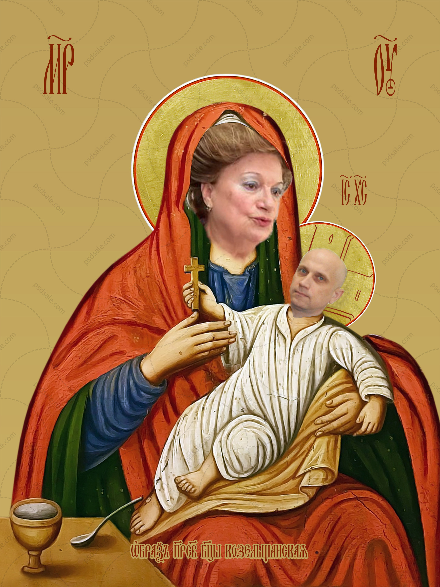
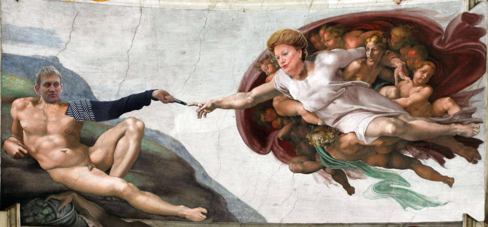
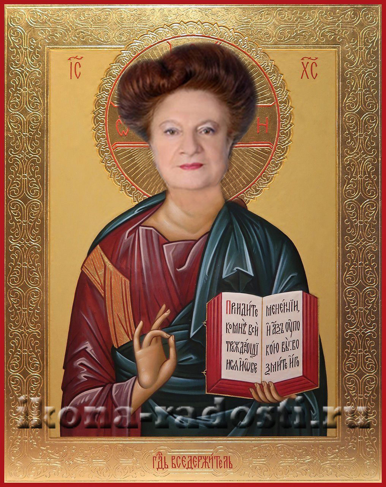

Мифология студентов ЧДТУ кафедры ИИБД

Чдтусская икона Божией Матери — икона Профенссссородицы, почитаемая не только в Черкасской национальной высшей чудотворной школе но и по всему миру. Празднование иконе совершается 21 февраля в високосный год, 21 февраля в невисокосные годы.

Рождение Сагунама

Иссусница